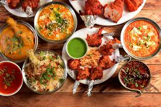
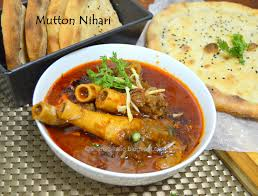
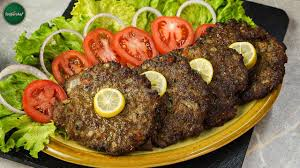
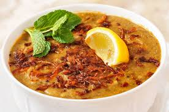
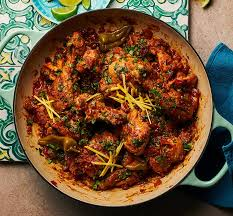
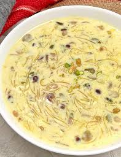

Pakistani cuisine is known for its rich flavors, spices, and slow-cooked dishes.
Here are six of the most loved recipes representing the true taste of Pakistan.

Biryani
Fragrant rice dish layered with meat, spices, and saffron.
See Recipe

Nihari
Slow-cooked spicy beef or lamb stew, served with naan.
See Recipe

Chapli Kebab
Spicy minced meat patties fried until crispy and delicious.
See Recipe

Haleem
A thick stew made of meat, wheat, lentils, and spices.
See Recipe

Chicken Karahi
Tomato-based chicken curry cooked with chilies and spices.
See Recipe

Sheer Khurma
A festive dessert made with milk, dates, vermicelli, and nuts.
See Recipe